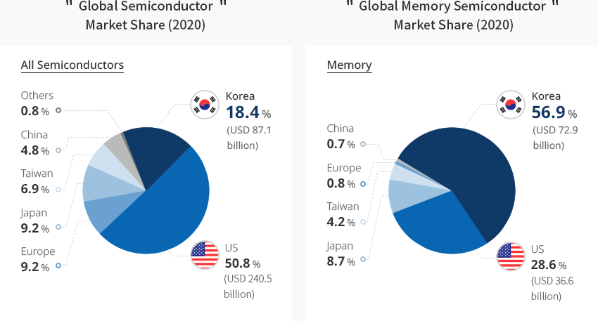
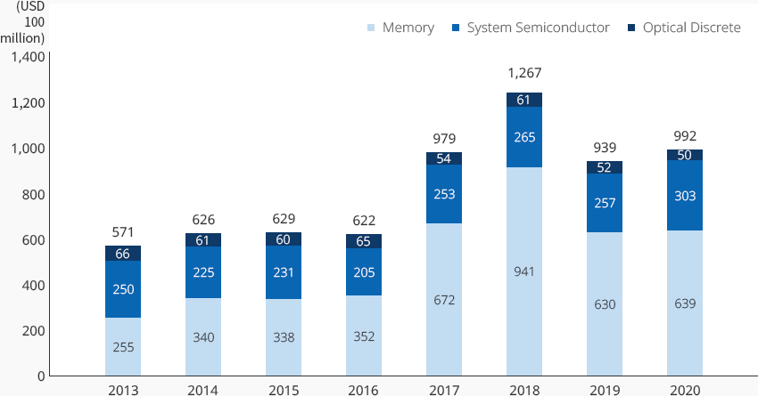
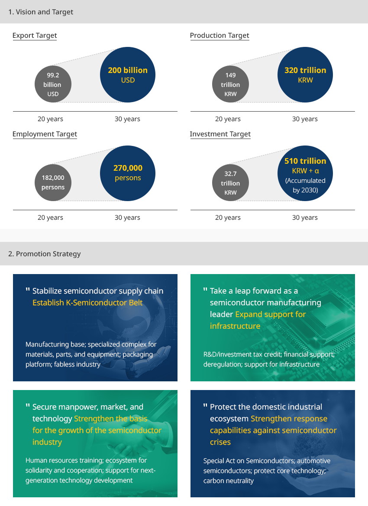
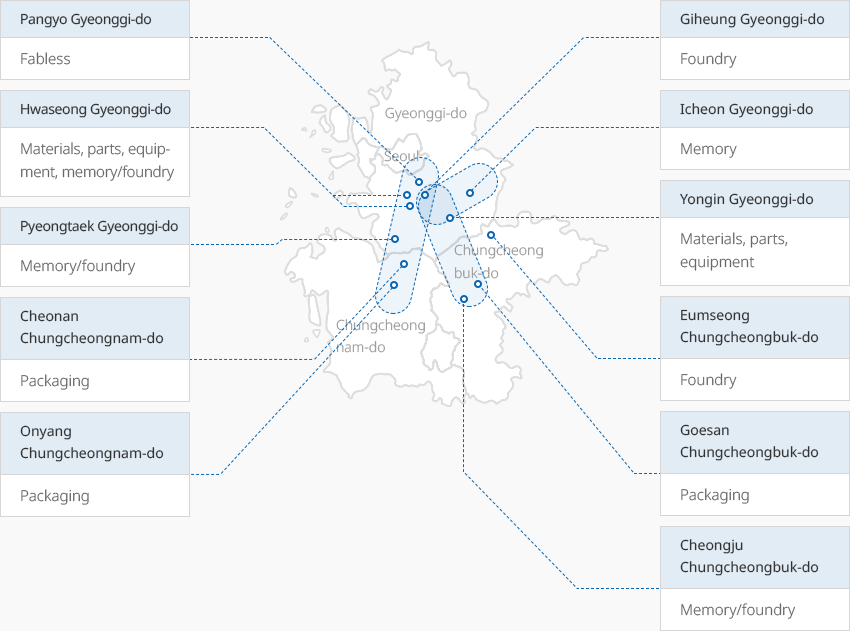

Semiconductor
- Home
- Why KOREA
- Industry
- Semiconductor
-
No. 1 Memory Semiconductor Industry in the World, Second Largest Semiconductor Producing Country CloseNo. 1 Memory Semiconductor Industry in the World, Second Largest Semiconductor Producing CountryKorea’s global semiconductor market share as of 2020 was 18.4%, continuing to rank second in the world since 2013.
In particular, Korea accounted for 56.9% of the global Memory semiconductor market,
with DRAM at 71.1% and NAND at 44.9%. Korean-made Memory semiconductors possess the world’s best technology.
Korea continues to focus on R&D and investment in order to keep its competitive advantage. In addition,
Korea is pushing to expand its foundry market share based on ultra-fine processing technology.Global Semiconductor Market Share (2020) All Semiconductors- KOREA 18.4%(USD 871 billion)
- US 50.8%(USD 2,405 billion)
- JAPAN 9.2%
- EUROPE 9.2%
- TAIWAN 6.9%
- CHINA 4.8%
- OTHERS 0.8%
Global Memory Semiconductor Market Share (2020) Memory- KOREA 56.9%(USD 729 billion)
- US 28.6%
- JAPAN 8.7%
- TAIWAN 4.2%
- EUROPE 0.8%
- CHINA 0.7%
 ※ Source : OMDIA 2021
※ Source : OMDIA 2021 -
Korea’s Principal Export Item Leading the Economy OPENKorea’s Principal Export Item Leading the EconomyKorea’s total export of semiconductors in 2020 amounted to USD 99.2 billion, of which Memory semiconductors
accounted for USD 63.9 billion or 64.4%. Semiconductors are one of Korea’s principal export items,
accounting for 19.3% of total exports as of 2020, leading the Korean economy and industry."Korea’s Semiconductor Export Trend"(Unit: billion)Korea’s Semiconductor Export Trend years, Memory , System Semiconductor , Optical Discrete Category 2013 2014 2015 2016 2017 2018 2019 2020 Memory 255 340 338 352 672 941 630 639 System Semiconductor 250 225 231 205 254 265 257 303 Optical Discrete 66 61 60 65 54 61 52 50 Total 571 626 629 622 979 1,267 939 992
-
Expansion of Entry intoBusiness Expansion in the Korea’sn Semiconductor Market By Global Materials, Parts, and Equipment Companies OPENExpansion of Entry intoBusiness Expansion in the Korea’sn Semiconductor Market By Global Materials, Parts, and Equipment CompaniesMany global companies in the fields of materials, parts, and equipment based on semiconductors of
Korea’s flagship industries are entering Korea. Lam Research, a US semiconductor etching and deposition
equipment maker, established Lam Research Manufacturing Korea in 2011. Since then, its domestic production
has grown continuously, and as a result, domestic production equipment unit no. 5000 was delivered in 2019.The company plan to open an R&D Center in Yongin by the end of this year in order to develop core technologies and
equipment within Korea, playing an important role in strengthening the industrial ecosystem in the country.Global Wafers, a Taiwanese silicon wafer manufacturer, established MEMC Korea and completed
the expansion of a second factory in 2019, which produces 12-inch silicon wafers.ASML, the exclusive supplier of advanced EUV exposure equipment, plans to build a state-of-the-art EUV cluster
in Hwaseong-si. Many other semiconductor materials companies, such as TOK, DuPont, and Merck,
are expanding their investment for production within Korea. The company has renamed itself Onsemi Korea,
which develops semiconductors for vehicles, also plans to expand investment in Korea and respond to
the growth of the electric vehicle market. -
K-Semiconductor Strategy Announced To Make Korea a Semiconductor Powerhouse OPENK-Semiconductor Strategy Announced To Make Korea a Semiconductor PowerhouseThe Korean government has announced the System Semiconductor Development Strategy (April 2019),
the AI Semiconductor Industry Development Strategy (October 2020), and the K-Semiconductor Strategy (May 2015).
The government has a strong willingness to nurture system semiconductors beyond memory semiconductors and
foster Korea into a global semiconductor powerhouse.With the goal of establishing a world-class semiconductor supply chain by 2030, the investment tax deduction rate
will be raised up to five times or more (6-10%). A new special fund for facility investment (including semiconductors)
worth at least KRW 1 trillion will be established in order to support investment in foundry, materials, parts,
equipment, and packaging facilities.The government also plans to expand its support to rationalize regulations on semiconductor manufacturing
facilities and establish infrastructure, such as water and electricity."Vision: Building the World’s Best Semiconductor Supply Chain by 2030"-
1. Vision and Target
- Export Target : 20years(992billion $ USD) > 30years(2,000billion $ USD)
- Production Target : 20years(149trillion KRW) > 30years(320trillion KRW)
- Employment Target : 20years(182,000) > 30years(270,000)
- Investment Target : 20years(32.7trillion KRW) > 30years(510trillion KRW + α)(Accumulated by 2030)
-
2. Promotion Strategy
- Stabilize semiconductor supply chain → Establish K-Semiconductor Belt : Manufacturing base; specialized complex for materials, parts, and equipment; packaging platform; fabless industry
- Take a leap as a semiconductor manufacturing leader → Expand support for infrastructure : R&D/investment tax credit; financial support; deregulation; support for infrastructure
- Secure manpower, market, and technology → Strengthen the basis for the growth of the semiconductor industry : Human resources training; ecosystem for solidarity and cooperation; support for next-generation technology development
- Protect the domestic industrial ecosystem → Strengthen response capabilities against semiconductor crises : Special Act on Semiconductors; automotive semiconductors; protect core technology; carbon neutrality
-
1. Vision and Target
-
Semiconductor Cluster Led by Samsung Electronics and SK Hynix OPENSemiconductor Cluster Led by Samsung Electronics and SK HynixSemiconductor companies are concentrated in the Gyeonggi-do region, with some in Chungcheongbuk-do
and Chungcheongnam-do. Pangyo-Giheung-Hwaseong-Pyeongtaek-Onyang and Icheon-Cheongju will be
connected to Yongin to complete the K-Semiconductor Belt, the world’s largest semiconductor supply chain.Samsung Electronics plans to build a new factory in Pyeongtaek, in addition to Suwon, Giheung, and Hwaseong,
which will form the world’s largest semiconductor production belt in the city. SK Hynix will build a new
semiconductor cluster on a scale of 4.48 ㎡ in Yongin. Starting construction in 2021, SK Hynix will start mass
production from 2024. In the Yongin cluster, a specialized complex of materials, parts, and equipment will be
established so that both buyers and suppliers can jointly develop key materials, parts, and
equipment items based on a large-scale cooperation model.The Pangyo area will be developed into a Korean version of fabless valley, and a high-tech packaging
specialized innovation base will be built in the central area which focuses on foundry production and
packaging processes."K-Semiconductor Belt"- Pangyo Gyeonggi-do: Fabless
- Hwaseong Gyeonggi-do: Materials, parts, equipment, memory/foundry
- Pyeongtaek Gyeonggi-do: memory/foundry
- Cheonan Chungcheongnam-do: Packaging
- Onyang Chungcheongnam-do: Packaging
- Giheung Gyeonggi-do: foundry
- Icheon Gyeonggi-do: memory
- Yongin Gyeonggi-do: Materials, parts, equipment
- Eumseong Chungcheongbuk-do: foundry
- Goesan Chungcheongbuk-do: Packaging
- Cheongju Chungcheongbuk-do: memory/foundry


Invest KOREA
Semiconductor/Display PM
PARK DONG YOUL
Key Industries Promotion Team
T.+82-2-3460-7726
Recommendation on Locations
Industrial complex information
[Gyeonggi-do Suwon City] Suwon Deltaplex (Block 3)
Click [Go to Detailed Information] to go to the relevant information screen of
Smart K-Factory service of Industrial Complex Corporation.
-
Complex nameSuwon Deltaplex (Block 3)
-
Initial designation date2008.12.26
-
Designated area(m2)847,409
-
ManagementGyeonggi-do Suwon City
-
Nearby RailwaySuwon Station
-
Distance from station(km)4
-
Nearby AirportGimpo International Airport
-
Distance from airport(km)49
-
Industrial water Supply capacity(ton/day)3195(㎥/day)
-
Affiliation local governmentGyeonggi-do Suwon City
-
Population1,190,074
Industrial complex information
[Gyeonggi-do Seongnam City] Pangyo 2nd Techno Valley[formerly: Pangyo
Creative Economy Valley]
Click [Go to Detailed Information] to go to the relevant information screen of
Smart K-Factory service of Industrial Complex Corporation.
-
Complex namePangyo 2nd Techno Valley[formerly: Pangyo Creative Economy Valley]
-
Initial designation date2015.11.30
-
Designated area(m2)430,402
-
ManagementGyeonggi-do Seongnam City
-
Nearby RailwayOksu Station
-
Distance from station(km)19
-
Nearby AirportGimpo International Airport
-
Distance from airport(km)45
-
Industrial water Supply capacity(ton/day)2025(㎥/day)
-
Affiliation local governmentGyeonggi-do Seongnam City
-
Population940,668
Industrial complex information
[Gyeonggi-do Hwaseong City] Hwaseong Songsan Techno Park General Industrial
Complex
Click [Go to Detailed Information] to go to the relevant information screen of
Smart K-Factory service of Industrial Complex Corporation.
-
Complex nameHwaseong Songsan Techno Park General Industrial Complex
-
Initial designation date2016.12.26
-
Designated area(m2)528,723
-
ManagementHwaseong Urban Corporation
-
Nearby RailwaySuwon Station
-
Distance from station(km)34
-
Nearby AirportGimpo International Airport
-
Distance from airport(km)59
-
Industrial water Supply capacity(ton/day)2,034(㎥/day)
-
Affiliation local governmentGyeonggi-do Hwaseong City
-
Population842,864
Industrial complex information
[Gyeonggi-do Gunpo City] Gunpo High-tech Industrial Complex
Click [Go to Detailed Information] to go to the relevant information screen of
Smart K-Factory service of Industrial Complex Corporation.
-
Complex nameGunpo High-tech Industrial Complex
-
Initial designation date2013.12.27
-
Designated area(m2)287,619
-
ManagementGyeonggi-do Gunpo City
-
Nearby RailwaySuwon Station
-
Distance from station(km)10
-
Nearby AirportGimpo International Airport
-
Distance from airport(km)38
-
Industrial water Supply capacity(ton/day)1,376(㎥/day)
-
Affiliation local governmentGyeonggi-do Gunpo City
-
Population275,508
Industrial complex information
[Chungcheongbuk-do Jeungpyeong County] Jeungpyeong 2nd General Industrial
Complex
Click [Go to Detailed Information] to go to the relevant information screen of
Smart K-Factory service of Industrial Complex Corporation.
-
Complex nameJeungpyeong 2nd General Industrial Complex
-
Initial designation date2009.11.20
-
Designated area(m2)702,807
-
ManagementChungcheongbuk-do Jeungpyeong County
-
Nearby RailwayJeungpyeong Station
-
Distance from station(km)6
-
Nearby AirportCheongju International Airport
-
Distance from airport(km)17
-
Industrial water Supply capacity(ton/day)3,348(㎥/day)
-
Affiliation local governmentChungcheongbuk-do Jeungpyeong County
-
Population81,949
Industrial complex information
[Gyeonggi-do Pyeongtaek City] LG Digital Park General Industrial
Complex
Click [Go to Detailed Information] to go to the relevant information screen of
Smart K-Factory service of Industrial Complex Corporation.
-
Complex nameLG Digital Park General Industrial Complex
-
Initial designation date2012.04.26
-
Designated area(m2)125,312
-
ManagementGyeonggi-do Pyeongtaek City
-
Nearby RailwayOsan Station
-
Distance from station(km)22
-
Nearby AirportGimpo International Airport
-
Distance from airport(km)72
-
Industrial water Supply capacity(ton/day)-
-
Affiliation local governmentGyeonggi-do Pyeongtaek City
-
Population527,166